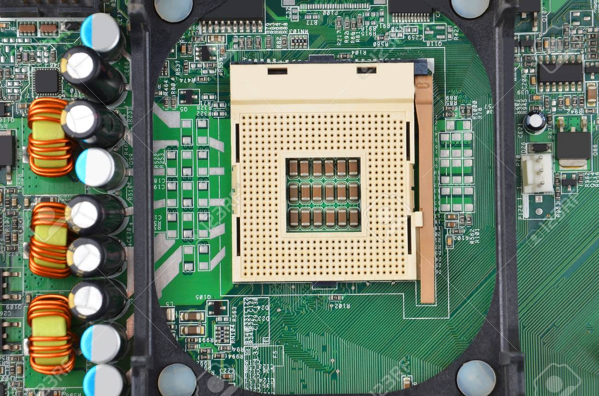
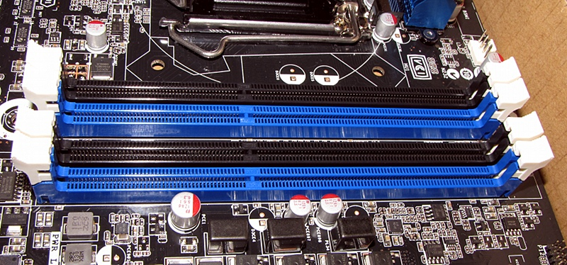
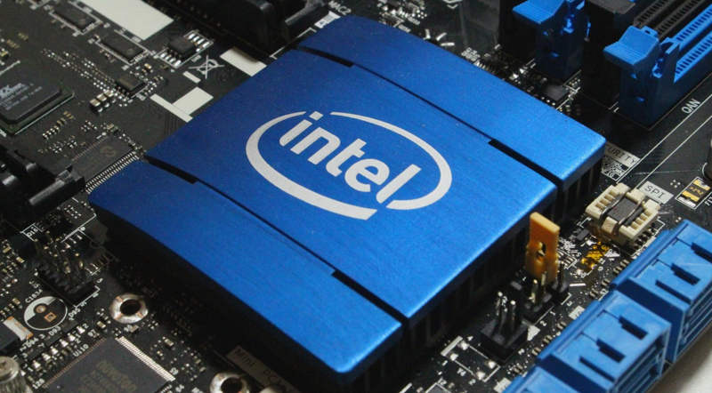
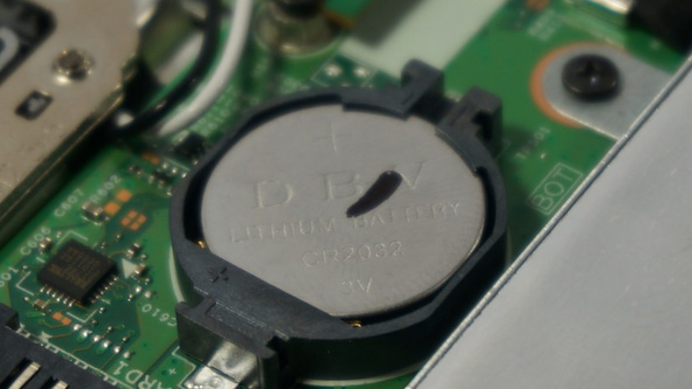

Partes de la Tarjeta Madre
Zocalo
El zócalo de CPU (socket en inglés) es un tipo de zócalo electrónico (sistema electromecánico de soporte y conexión eléctrica) instalado en la placa base, que se usa para fijar y conectar el microprocesador, sin soldarlo lo cual permite ser extraído después. Por ello, se utiliza en equipos de arquitectura abierta, donde se busca que haya modularidad en la variedad de componentes, permitiendo el cambio de la tarjeta o el integrado. En los equipos de arquitectura propietaria, los integrados se añaden sobre la placa base soldándolo, como sucede en las videoconsolas.
Ranuras para memoria Ram
Las ranuras de memoria, o bancos de memoria (memory slots), constituyen los conectores para la memoria principal del ordenador, es decir, la memoria RAM (Random Access Memory). Las ranuras de memoria RAM son los conectores en los cuales se conectan los módulos de memoria principal del ordenador. A estos conectores también se les denomina bancos de memoria. Están en la placa base, Según el tipo.
Este soporte viene de los llamados “SLOT DIMM” con los que cuentan prácticamente todas las placas base de sobremesa y un buen número de ordenadores portátiles. Una memoria RAM en formato SO-DIMM en un Slot compatible.
Chipset
El chipset es un conjunto de componentes electrónicos que están integrados en el procesador de un dispositivo electrónico. Pues bien, el chipset sería algo así como el encargado de controlar el tráfico de estos datos, o el centro de operaciones donde todos estos datos se organizan.
Las placas base modernas suelen incluir dos integrados, denominados puente norte y puente sur, y suelen ser los circuitos integrados más grandes después de la GPU y el microprocesador. Las últimas placa base carecen de puente norte, ya que los procesadores de última generación lo llevan integrado.
Bateria
Una batería es un componente de hardware que suministra energía a un dispositivo, lo que permite que ese dispositivo funcione sin cable de alimentación. Las baterías son capaces de alimentar un ordenador portátil durante varias horas dependiendo de la cantidad de energía que requiera.
Menu
Palabras Sabias
 La mayoría de las personas son como alfileres: sus cabezas no son lo más importante. .
La mayoría de las personas son como alfileres: sus cabezas no son lo más importante. .
Jonathan Swift